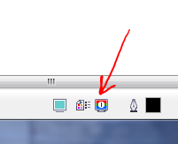
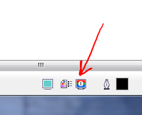

Что такое проверка цветов в x5 и как она работает?
Вы случайно не эту кнопку имеете виду, просто из-за ее названия не так понимают ее предназначение. А потом задают вопросы, что такое проверка цвета в X5

Ну да она самая. В хелпе по поиску "проверка цвета" ничего нет.
zmeiy, здесь есть короткое описание функции Proof Colors
Лучше запомните ее как включить и выключить сторонний профиль. А настраивается он отсюда: Меню: Tools-Color Proof Settings...
Все понял, большое спасибо за разъяснения!
Вы случайно не эту кнопку имеете виду, просто из-за ее названия не так понимают ее предназначение. А потом задают вопросы, что такое проверка цвета в X5

Ну да она самая. В хелпе по поиску "проверка цвета" ничего нет.
zmeiy, здесь есть короткое описание функции Proof Colors
Лучше запомните ее как включить и выключить сторонний профиль.
А настраивается он отсюда:
Меню: Tools-Color Proof Settings...
Все понял, большое спасибо за разъяснения!